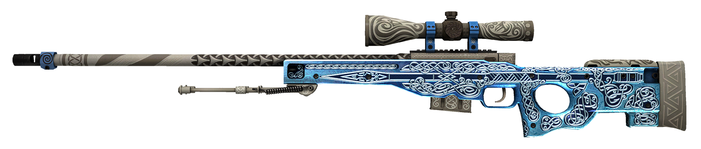

Esta arma foi baseada na arma real "Artic Warfare".
Desenvolvido pela empresa britânica Accuracy International.
Esta arma é de calibre 7.62, Seu alcance efetivo é de cerca de 0,8~1 milha (.338 Lapua Magnum), e seu alcance máximo é de de 1,2 milha.